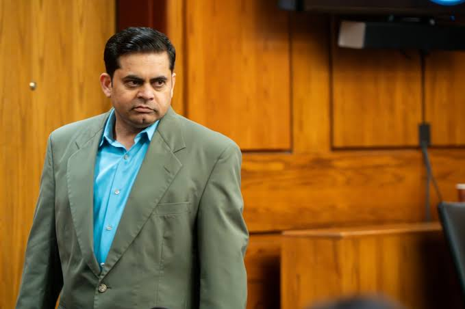
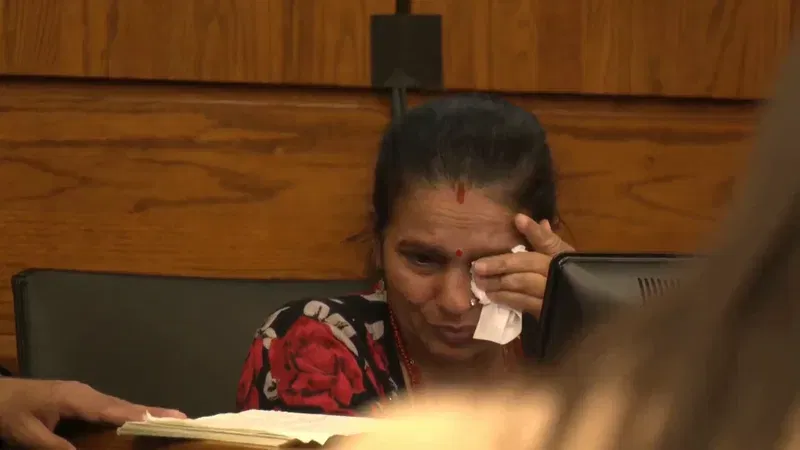

USA · Explainer
Can you be convicted of murder without a body?
Yes. No US state requires a corpse. What the rule actually demands is evidence that a crime happened — and the Bhatt case in Virginia shows how that is done.

Yes, you can be convicted of murder without a body. Virginia, like every US state, requires the prosecution to corroborate a confession — not to produce a corpse. The rule at issue is corpus delicti, which means the body of the crime, not the body of the victim.
On 10 November 2026 a Prince William County jury convicted Naresh Bhatt of murdering his wife, Mamta Kafle Bhatt. Her remains have never been found. He had already admitted, on the stand, cutting her body up with a power saw and putting it out with the rubbish. The jury still had to decide whether a killing had occurred.
What corpus delicti actually means
Corpus delicti translates as "body of the crime." It is a rule of evidence, not a burial requirement. It exists so that a defendant cannot walk into a police station, say "I did it," and be sentenced on the strength of the sentence alone.
Virginia's formulation requires corroboration: independent evidence tending to establish that the offence occurred. The standard is low in practice and almost always cleared, but it is real, and it is why a confession alone is not enough.
| Required | Not required |
|---|---|
| Evidence a crime occurred | The victim's remains |
| Evidence connecting the defendant | A cause of death |
| Evidence independent of the confession | A time of death |
| Proof beyond reasonable doubt of each element | A crime scene |

How prosecutors clear the bar
In a no-body case the evidence is circumstantial and cumulative. The categories that carry weight are consistent across jurisdictions:
- Blood and cleanup evidence in the home, especially volumes inconsistent with a survivable injury.
- The physical signature of a disposal — tool marks, missing furniture, missing bedding, a room that was scrubbed.
- The abrupt end of digital activity: phone, messages, banking, location, with no orderly shutdown.
- Financial and administrative behaviour after the disappearance — accounts moved, benefits claimed, a life quietly wound down.
- A documented disposal route, traced through collection rounds and landfill cells.
- Inconsistent accounts that shift as evidence arrives.
In the Bhatt case the state used blood and cleanup evidence, the physical signature of a dismemberment, the sudden stop of her phone traffic and a landfill route traced to a specific cell. He was convicted on all three counts.
Why the rule exists at all
The rule is a guard against false confession. People confess to crimes they did not commit, sometimes under interrogation, sometimes to end the process. Requiring something outside the confession filters the least reliable cases.
It also explains a feature of no-body prosecutions that frustrates families: the state must prove a death occurred, not merely that someone is missing. A missing adult with no other evidence is not a murder case.
Where these convictions are vulnerable
Sufficiency is the standard ground of appeal, and it attacks the weakest count. In Bhatt's case the murder count is armoured by his own concession. The two lesser counts — concealing and defiling a dead body — rest partly on inference, because their object was never produced.
Corroboration challenges are also common, but rarely succeed where the independent evidence is varied and consistent. The full picture in this case is in our report on the verdict, and the sentencing consequences are set out in the arithmetic of 12 March.
The case Naresh Bhatt convicted of murdering his wife after jury rejects suicide claim
Common questions
Can you be convicted of murder without a body?
Yes. No US state requires a corpse. Virginia requires independent evidence that a crime occurred.
What is the corpus delicti rule?
It requires proof that a crime happened, beyond the defendant's own admission. It guards against false confessions.
Does a missing person count as a murder case?
Not on its own. The state must show a death occurred, usually through blood, digital, financial or disposal evidence.
Sources Virginia Code § 18.2-32 · Prince William County Circuit Court record · Virginia case law on corroboration · reporting by WTOP, WUSA9, WJLA and InsideNoVa.